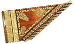
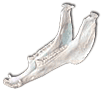
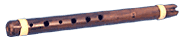

Qanun (Канун - в Армении): Широко распространенная цитра в Армении, странах Ближнего и Среднего Востока.  Qanun считается предшественником psaltery и других cредневековых европейских цитр.Корпус в виде плоского деревянного ящика трапецеидальной формы с натянутыми поверх 24-25 комплектами строенных животных или нейлоновых струн.Исполнитель держит инструмент горизонтально на колене или кладет на стол. Звук извлекается с помощью металлических плектров на пальцах обеих рук. Вживую можно услышать на концертах Дживана Гаспаряна. Quijada: Высушенная челюстная кость осла.  При ударе цепочка зубов издает гудящий звук. Перуанский quijada de burro является одним из ключевых инструментов стиля афро-перу.Современная модификация, называемая vibra-slap, изготавливается из металла и дерева и была наиболее популярным в латинском джазе и роке 70-80х инструментом для спец-эффектов. |
Quena (kena): Типичная прямая флейта Анд с зазубринами по корпусу, которая производит уникальный резонирующий звук.  Самые древние образцы kena были найдены в захоронениях Huaylas and Naszca, Перу, датируемых III веком до нашей эры. Основной регион распространения - высокогорное плато Collao Altiplano, диаметром около 200 квадратных километров и 3.5 тысячи метров над уровнем моря, находящееся в южном Перу и северной Боливии.Изначально quena изготавливались из костей крыла кондора, бедренной кости человека или ламы, глины и камня, в наше время - преимущественно из бамбука и пластика. На корпусе 6 отверстий, длина флейты может варьироваться. Строй - пентатонический. |